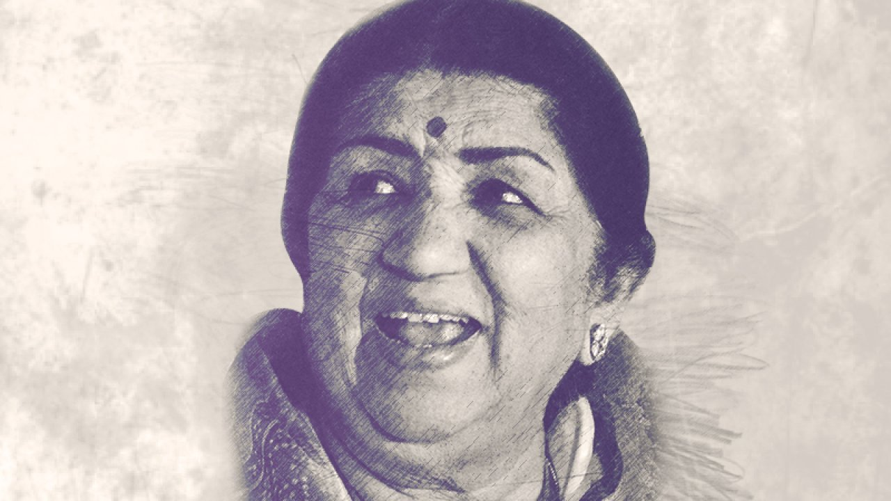

Lata Mangeshkar.
The Nightingale of India

Lata Mangeshkar(1929-2022)
A Short Biography Of Lata Mangeshkar.
Lata Mangeshkar was PlayBack Singer and music composer and she also worked as film producer.
Lata Mangeshkar was born on 28 september 1929, in Indore.
Lata Mangeshkar's real name is Hema Mangeshkar.
She was conferred India's highest civilian award Bharat Ratna in 2001.
She won National Film Awards, BFJA Awar for best Female playback singer and many more.
She has Honoured with Padma Bhushan, Dadasaheb Phalke Award, Maharashtra Bhushan,padma vibhushan.
She had been a Member of parliament,Rajya Sabha.In arts
She Has recorded songs in over thirty-six Indian Languages.
She also sang in English,Russian,Dutch and even in Swahili.
she died on 6th February 2022,In Mumbai,Maharashtra,India
"It was not really the external influences that made me a singer.Music was within me.I was full of it."
--Lata Mangeshkar--